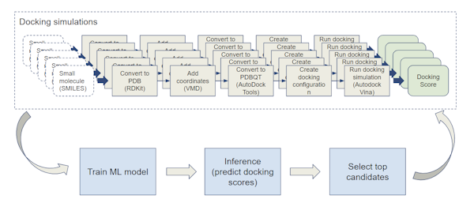

Research
 In the summer of 2023, I had an amazing 10-week paid internship working under the mentorship of Professors Kyle Chard and Ian Foster, in Globus Labs at the University of Chicago. I explored the K-Nearest Neighbors machine learning algorithm to accelerate virtual drug screening. Here is a taste of what my summer research project was about. The COVID-19 pandemic has highlighted the power of using computational methods for virtual drug screening. However, the molecular search space is enormous and protein docking methods are still computationally intractable without access to the world’s largest supercomputers. Instead, researchers are using AI methods to help guide docking campaigns. In such approaches, a lightweight surrogate model is trained and then used to identify promising candidates for screening. I designed and developed ParslDock, a Python-based pipeline using the Parsl parallel programming library and the K-Nearest Neighbors machine learning model to screen a huge molecular space of molecules against arbitrary receptors. We achieved a 38X speedup with ParslDock compared to a brute-force docking approach. Our results have been accepted for publication through a peer-reviewed process at IEEE/ACM SuperComputing/SC 2023 conference, which I will present in Denver Colorado in November as a poster (“writeup”,poster). My summer work was the foundation of a tutorial to showcase Parsl coupled with Machine Learning that was given to an audience of 40 people on September 14th at the Developing Large-Scale Parallel Programs in Python with Parsl Workshop co-located with the TAPIA Conference 2023.
My research project including code and datasets has been documented in a GitHub repository: ParslDock GitHub
I wrote a final report for my summer work, and made a final presentation.
- John Raicu, Valerie Hayot-Sasson, Kyle Chard, and Ian Foster. “Navigating the Molecular Maze: A Python-Powered Approach to Virtual Drug Screening”, Technical Report, University of Chicago, 2023
- “Navigating the Molecular Maze: A Python-Powered Approach to Virtual Drug Screening”, Globus Labs, University of Chicago, August 15th, 2023
My research results have been peer-reviewed and accepted for publication.
- John Raicu, Valerie Hayot-Sasson, Kyle Chard, and Ian Foster. “Navigating the Molecular Maze: A Python-Powered Approach to Virtual Drug Screening”, IEEE/ACM SuperComputing/SC 2023 [poster]
I submitted another publication for peer-review for which I am waiting for a decision.
- Jamison Kerney, John Raicu, Kyle Chard, Ioan Raicu. “Towards Fine-grained Parallelism in Parsl”, under review at IEEE International Parallel & Distributed Processing Symposium (IPDPS) 2024